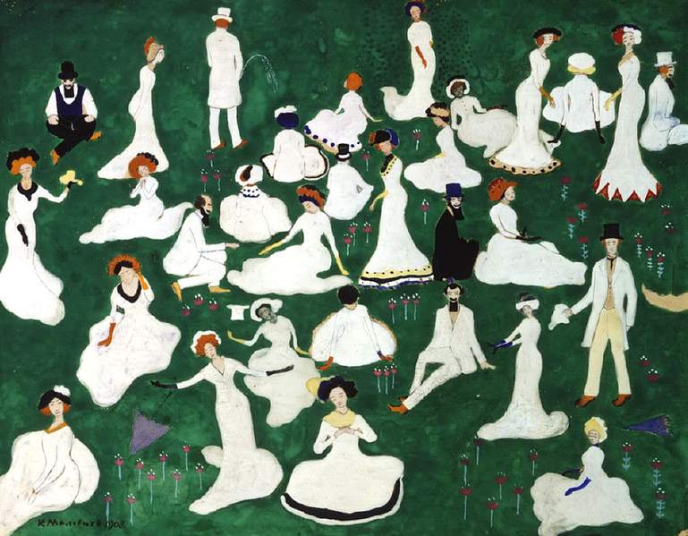
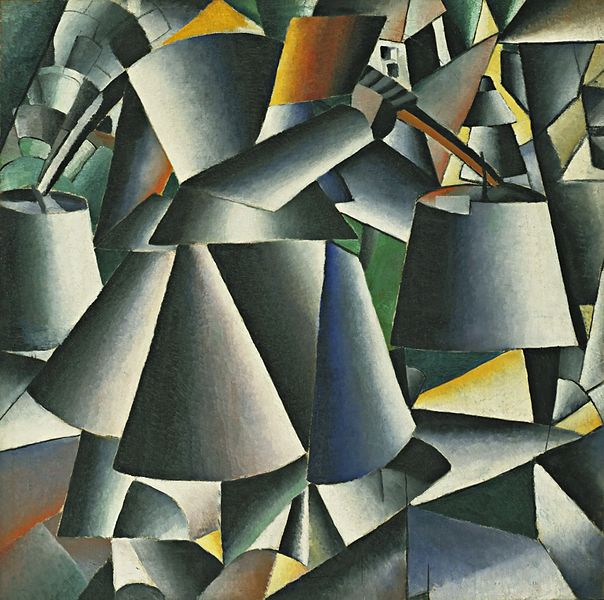
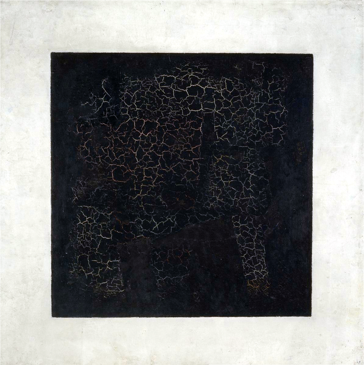

|
Казимир Малевич | |
| Казимир Малевич – русский художник, основоположник супрематизма — направления в абстрактном искусстве, педагог, теоретик искусства и философ. | |
| 1 - Отдых (Общество в цилиндрах), 1908; 2 - Крестьянки с ведрами, 1912-1913; 3 - Черный супрематический квадрат, 1915. | |
|
   |
|
|
email: danredtu1103@mail.ru |